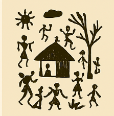

Warli art is a traditional tribal painting style from Maharashtra that uses simple geometric shapes to depict daily life, nature, and rituals in harmony with the environment.
I. Warli painting is a 'tribal art' form from the 'Warli tribe' in Maharashtra, India.
II. It dates back to '10th century A.D.', but it gained attention in the '1970s'.
III. Traditionally, Warli art was painted on the walls of village huts using 'rice paste' on a "mud background".
IV. The paintings depict 'daily life scenes', 'farming activities', 'festivals,' 'dances', and 'nature'.
V. It is a 'folk art' rather than a religious one, with the central theme often being 'Mother Nature'.
1. 'Jivya Soma Mashe' – The most renowned Warli painter who made this art form internationally famous.
2.'Balu Mashe' – Another popular Warli artist from the same tradition.
3. 'Shantaram Tumbada' – Known for his modern interpretations of Warli themes.
1.Medium: White pigment made from rice flour on mud walls.
2.Shapes:
I.Circle – Represents the sun and moon.
II.Triangle – Represents mountains and trees.
III.Square – Represents sacred enclosures.
3.Figures: Simple human and animal forms made of triangles and circles.
4.Themes: Nature, fertility, daily life, hunting, dancing, farming.
5.Simplicity: Minimalistic, monochromatic style with no perspective or shading.
6,Geometric Style: Symmetry and rhythm dominate the composition.